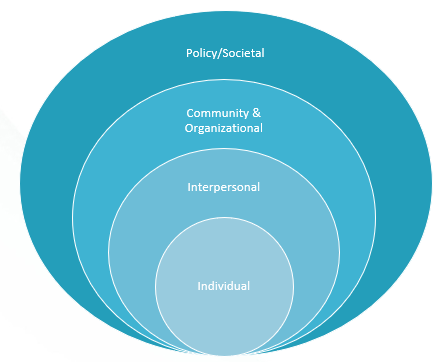
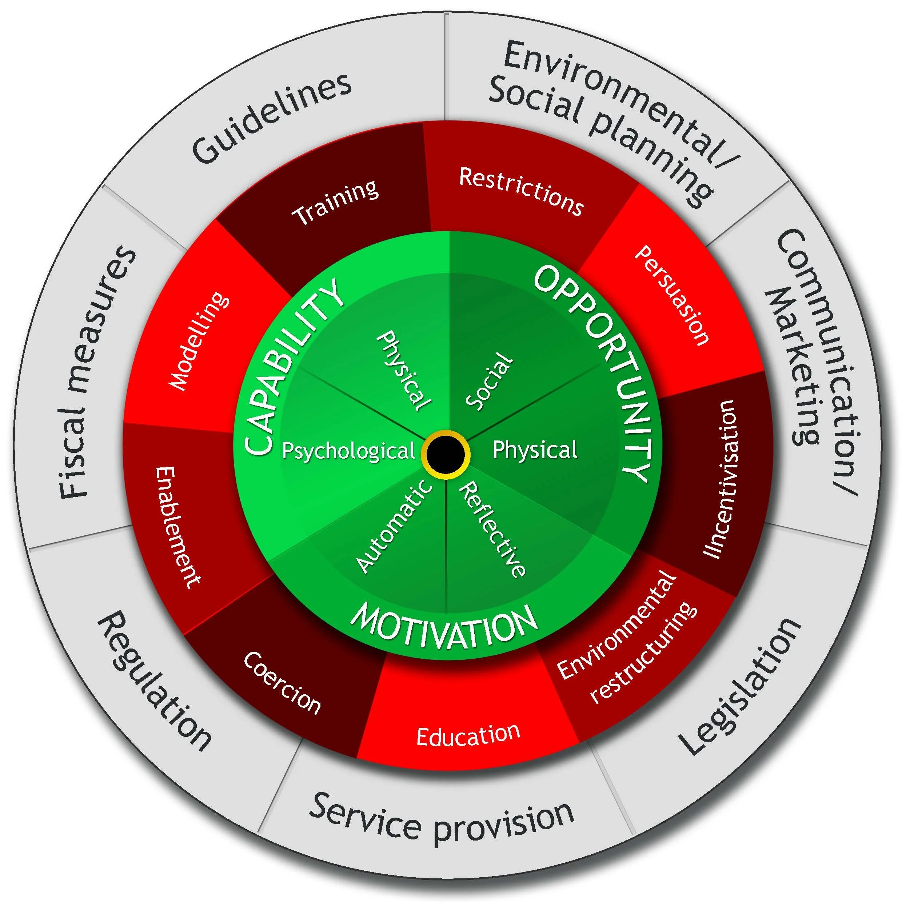
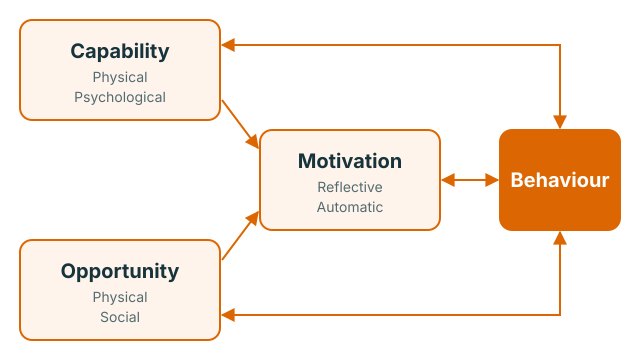

Willkommen beim ENGAGE E-Learning.
intro
ENGAGE e-learning
Understanding Behaviour: Participation in older adults
Why behaviour is never about one thing
Whether someone takes up a new activity is never the result of a single cause. It depends on who they are, who is around them, and what their surroundings make possible — all at once. Research on physical activity in older adults commonly uses the socio-ecological model to make sense of this: the idea that participation is shaped by influences at several levels at the same time, and that these levels interact rather than acting in isolation (Lusmägi & Aavik, 2021; Chen et al., 2025).
The model is often broken into five levels: individual factors — a person's own body, health, habits and the meanings they attach to an activity; interpersonal factors — family, peers and instructors; institutional factors — employers, sports clubs and health services; community factors — the local municipality, facilities and transport; and policy factors — funding, legislation and public campaigns (Lusmägi & Aavik, 2021). A barrier at any one of these levels can be enough to stop participation, even when every other level would support it.
The rest of this module looks at these influences in three groups — individual, interpersonal, and environmental (institutional, community and policy factors combined) — using evidence from older adults themselves, before turning to what you, as a trusted professional, can do through the conversation itself.

The socio-ecological model
Individual, interpersonal, community/organisational and policy/societal levels all interact — a barrier at any one of them can be enough to stop participation, even when every other level would support it. The lessons below group institutional, community and policy factors together as "environmental".
Adapted from Bronfenbrenner, U. (1979). The ecology of human development. Cambridge, MA: Harvard University Press.
What influences participation in older adults
Not everything in a person's life, relationships or surroundings affects participation the same way. Something that makes an activity harder to start or continue is called a barrier; something that makes it easier is called a facilitator.
Research can identify which barriers and facilitators are common across many older adults — this is what the evidence below, organised by level, describes (Chen et al., 2025). But the same influence does not affect everyone the same way: what is a barrier for one person can be a facilitator for another. A "seniors' yoga" class is a useful example: some people avoid it precisely because being invited to an age-labelled group feels like being told they are "old"; others choose it for exactly the opposite reason — being among peers of a similar age and fitness level feels comfortable and motivating, rather than intimidating.
In practice: knowing the general pattern is a starting point, not a conclusion. The same offer can land completely differently depending on how someone sees themselves — it is worth checking which it is for this particular person, rather than assuming.
Intrapersonal factors: what sits with the person
Intrapersonal factors are what a person carries within themselves: their body, health, beliefs, finances and feelings about an activity. A systematic review of 20 studies with over 18,500 older adults found that fear of falling or getting injured was the single most commonly reported barrier to physical activity, followed closely by pain and the effects of ageing on balance, endurance and muscle strength — health can genuinely vary from day to day (Chen et al., 2025). Limited spare time, low interest or motivation, and the perceived cost of activities or of getting to them were also frequently reported.
The same evidence points to what helps. Understanding the benefits of an activity, feeling healthier after taking part, enjoying it, and having it become part of a routine were the most common facilitators — along with simple reassurance from a doctor or physiotherapist for those worried about injury (Chen et al., 2025).
In practice: a hesitant "no" is rarely only about motivation. It is worth asking what, specifically, feels uncertain or risky about this particular activity, rather than assuming the person is simply not interested.
Interpersonal factors: what sits with others
Interpersonal factors are the people around a person: family, friends, peers, instructors and professionals. The same review found that a lack of support from family or peers, caring responsibilities, and family concerns about injury risk were common barriers — as was simply not having anyone to go with, which some older adults experience as unsafe or isolating (Chen et al., 2025). Feeling intimidated, judged, or culturally out of place in a group was also reported, particularly among those with a different language or cultural background to others taking part.
On the facilitator side, support from family and friends, a pet to exercise with, and instructors experienced as friendly rather than purely professional all helped older adults start and continue. Socialising and making new connections through the activity itself was one of the most frequently reported reasons for continuing (Chen et al., 2025).
In practice: asking who else is involved — a partner, a friend, a pet, a group they already know — can reveal a more realistic first step than asking about the activity alone.
Environmental factors: what sits around the person
Environmental factors are the physical and practical surroundings: weather, the built environment, transport, cost and the programmes actually on offer. Poor weather was the most commonly reported environmental barrier in the review — in one study, 97% of participants named it as a deterrent — alongside unsafe or poorly lit streets, parks or facilities that were too far away, and a lack of public transport to reach them (Chen et al., 2025). A lack of activities designed with older adults in mind was also frequently mentioned.
Facilitators mirrored this closely: good weather, well-maintained and well-lit streets, benches for resting, nearby parks, accessible public transport, and low-cost or free programmes tailored to older adults all supported participation (Chen et al., 2025).
In practice: this is often where your local knowledge, as someone embedded in the Gemeinde, matters most — knowing which offers are actually reachable, affordable and suitable can resolve a barrier the person may not think to mention.
Sources
- Lusmägi P, Aavik K. Developing a social-ecological model for promoting physical activity among older adults based on the experiences of 50+ adults. SAGE Open. 2021;11(3). doi:10.1177/21582440211032943.
- Chen Y, Shah S, Chen Y, Owen AJ, Ekegren CL, Ilic D, Gasevic D. Barriers to and facilitators of physical activity among community-dwelling older adults: a systematic review. BMJ Open. 2025;15:e095260. doi:10.1136/bmjopen-2024-095260.
Behaviour change science
Module 1 showed that whether someone takes part in an activity is explained by many factors, working at different levels at once — from a person's own body and beliefs, to the people around them, to the services, facilities and policies that shape what is actually possible. A hesitant "no" rarely has just one reason.
This module steps back to look at the field that studies these questions: behaviour change science. It explains what the field is about, why it matters for the people you support, and one of its most important lessons – that change takes time.
What is behaviour change science?
In this course, behaviour simply means what people do – for example going for a walk, joining a choir or meeting a neighbour for coffee. Behaviour change science is the research field that studies why people do what they do, and what helps them start, change or keep up a behaviour.
To make sense of this, researchers develop theories of behaviour change. A theory is a structured explanation: it tries to describe why, when and how a behaviour happens or does not happen, and which factors influence it (Laranjo, 2016).
There is no single theory that explains everything. Many of the best-known theories focus on what goes on in a person's thinking – their intentions, attitudes and beliefs. Other influences have long received less attention, even though they also shape what people do: feelings, habits, impulses, self-control and the person's surroundings. For this reason, it is common to combine several theories, and to choose them according to the people and the setting in question (Laranjo, 2016). The Behaviour Change Wheel in Module 3 is one framework that brings many of these influences together.
In practice: you do not need to know the theories by name. What helps is the idea behind them. Someone may like the idea of a walking group (a thought), yet have spent their afternoons at home for years (a habit), feel a little nervous about meeting new people (a feeling), and find the meeting point hard to reach by bus (their surroundings). Each of these can make a difference to whether, and how, they decide to take part.
Why behaviour change matters
Behaviour change is relevant in many areas of health, from preventing illness to living well with a long-term health condition. Programmes that support behaviour change have been used successfully for many different behaviours and situations. Importantly, even small changes in everyday behaviour can add up to a real difference for health – both for individuals and for the population as a whole (Laranjo, 2016).
Physical activity is a good example. Becoming more active, and staying active, is linked with a longer life, a better quality of life and better physical functioning in everyday tasks (Laranjo, 2016). In ENGAGE, the behaviour in focus is taking part in social and physical activities in the community, chosen by the older adult themselves.
Research on supporting people who live with a long-term health condition adds a useful lesson. It highlights the value of people taking an active part in their own health, with the knowledge, skills and confidence to do so. Programmes that support people in this way often share similar building blocks (Laranjo, 2016):
- information about the topic,
- working out together what the difficulty is,
- setting goals and making a plan,
- building skills and solving problems together,
- following up over time.
Your role is not to manage anyone's health. But you will recognise several of these building blocks in the ENGAGE guideline, for example setting a goal together, planning a concrete first step and following up on the agreed step. In each of them, the older adult stays in charge of what they want to do.
In practice: a first visit to a local group may seem like a small step. From the point of view of behaviour change science, small steps like this count: they are often how a longer-lasting change gets started.
Behaviour change as a process
One idea that is now widely accepted in behaviour change research is that change is a process, not an event. People rarely decide one day to do something differently and then simply keep it up from the next day on. Change usually happens gradually, in stages, and few people can transform a long-standing habit all at once. The idea is not new: some theories that describe change as a series of stages go back more than 50 years (Glanz & Stryker, 2008).
In practice: a first visit to a group is one step along the way, not the finish line. Hesitating, trying something once, pausing and coming back are all normal parts of this process – not signs of failure.
Sources
- Laranjo L. Social media and health behavior change. In: Participatory Health Through Social Media. Elsevier; 2016. p. 83–111. doi:10.1016/B978-0-12-809269-9.00006-2. Sections 6.2 and 6.3 used.
- Glanz K, Stryker JE. Health behavior and risk factors. In: International Encyclopedia of Public Health. Elsevier; 2008. p. 146–152. Cites Lewin K (1935) and Weinstein ND (1993) for early stage theories of behaviour change.
The Behaviour Change Wheel and COM-B
From many factors to purposeful change
This module turns from understanding why towards how behaviour can be purposefully, and respectfully, supported to change. The same work that gave us COM-B — the model already used in the ENGAGE guideline — situated it at the centre of a wider framework called the Behaviour Change Wheel (BCW): a systematic way of moving from understanding a behaviour to choosing support that actually fits what is getting in its way (Michie, van Stralen, & West, 2011).

The Behaviour Change Wheel
Michie, S., van Stralen, M. M., & West, R. (2011). Implementation Science, 6, 42.
The wheel has three layers, each shown in its own colour, and it is read from the inside out (Michie, Atkins, & West, 2014).
The green hub: where the behaviour comes from. At the centre is COM-B, which identifies the sources of a behaviour that could be worth targeting. It is split into six parts: physical and psychological capability, physical and social opportunity, and reflective and automatic motivation. Starting here means first asking what is actually getting in the way, before deciding what to do about it.
The red middle ring: what kind of support could help. Around the hub are nine intervention functions — broad ways of supporting change, chosen according to what the COM-B analysis has shown. Education increases knowledge or understanding. Persuasion uses communication to stir positive or negative feelings or to prompt action. Incentivisation creates an expectation of reward, and coercion an expectation of punishment or cost. Training builds skills. Restriction uses rules to reduce the opportunity for a behaviour or for competing behaviours. Environmental restructuring changes the physical or social context. Modelling provides an example for people to aspire to or imitate. Enablement increases means or reduces barriers in ways that go beyond education, training or environmental restructuring. The book calls them "functions" rather than "types" because one activity can do several jobs at once: an information leaflet, for example, can both educate and persuade.
The grey rim: what makes that support possible. The outer ring shows seven policy categories — decisions taken by authorities and organisations that allow the intervention functions to be delivered: communication/marketing (using print, electronic, telephone or broadcast media), guidelines (documents that recommend or require a practice), fiscal measures (using the tax system to raise or lower costs), regulation (setting rules or principles of behaviour or practice), legislation (making or changing laws), environmental/social planning (designing or controlling the physical or social environment) and service provision (delivering a service). These sit beyond any single conversation, but they shape which offers exist in a community in the first place — echoing the environmental level of the socio-ecological model in Module 1.
COM-B: the hub of the wheel
At the centre of the wheel sits COM-B, the same model the guideline already uses: a behaviour such as participating in an activity happens through the interaction of Capability (can the person do it, physically and psychologically), Opportunity (does their environment make it possible — transport, cost, timing, social support) and Motivation (does the person want to, and does it feel worthwhile) (Michie, van Stralen, & West, 2011). The next lesson looks at each of these in depth; the point for now is that all three usually need to be in place, even though conversations about activity often focus on motivation alone.

The COM-B model
Capability, Opportunity and Motivation each shape behaviour, and Capability and Opportunity also shape Motivation. The arrows to and from Behaviour run both ways: taking part can itself build skills, open up opportunities and strengthen motivation.
Adapted from Michie, S., van Stralen, M. M., & West, R. (2011). Implementation Science, 6, 42.
TDF: looking more closely within each component
Capability, Opportunity and Motivation are broad categories, and each can mean several different things in practice — a lack of "capability" could be about physical strength, or simply about not knowing what an activity involves. The Theoretical Domains Framework (TDF) was developed to unpack this: it organises the same territory as COM-B into around fourteen more specific domains, such as knowledge, skills, beliefs about one's own capabilities, social influences, and environmental context and resources (Cane, O'Connor, & Michie, 2012). The guideline itself does not use the TDF directly, but it is introduced here because it can help pinpoint, more precisely than COM-B alone, exactly what kind of support a specific barrier calls for.
Sources
- Michie S, van Stralen MM, West R. The behaviour change wheel: a new method for characterising and designing behaviour change interventions. Implementation Science. 2011;6:42. doi:10.1186/1748-5908-6-42. Cited via the ENGAGE guideline, which uses the COM-B model from this same paper.
- Michie S, Atkins L, West R. The Behaviour Change Wheel: A Guide to Designing Interventions. London: Silverback Publishing; 2014. ISBN 978-1-912141-08-1.
- Cane J, O'Connor D, Michie S. Validation of the theoretical domains framework for use in behaviour change and implementation research. Implementation Science. 2012;7:37. doi:10.1186/1748-5908-7-37. Introduced here as a complementary framework, not used in the guideline itself — not read directly in this session; please verify domain details against the original source.
Behaviour change techniques (BCTs)
In your conversations you already do many things that help people take a first step: you listen, you share a few ideas, you agree on something small, you call back to ask how it went. Researchers have given these everyday actions names. This module introduces that shared language, explains where it comes from, and shows how it connects to the ENGAGE guideline you work with.
What are BCTs and why name them?
A behaviour change technique (BCT) is a small, concrete action that can help someone change what they do. You can see it happen, and someone else could do the same thing again. Examples are agreeing on one clear goal together, writing down when and how a first visit will happen, or making a reminder call on the agreed day. A single conversation usually contains several of these techniques (Michie, Atkins, & West, 2014).
To make these techniques easier to talk about, researchers collected them in a catalogue called the Behaviour Change Technique Taxonomy ("taxonomy" simply means an ordered list of categories). It describes 93 techniques, each with a name, a short definition and an example, sorted into 16 groups such as "Goals and planning", "Social support" or "Self-belief" (Michie et al., 2013). Each technique has a number – for example 1.1 for goal setting or 3.2 for practical social support. The ENGAGE guideline uses the same numbers, so you will recognise them there.
The 16 groups at a glance
- Goals and planning
- Feedback and monitoring
- Social support
- Shaping knowledge
- Natural consequences
- Comparison of behaviour
- Associations
- Repetition and substitution
- Comparison of outcomes
- Reward and threat
- Regulation
- Antecedents (what happens just before a behaviour)
- Identity
- Scheduled consequences
- Self-belief
- Covert learning (learning through imagining)
Why give these actions names? Phrases like "I supported her" or "we talked it through" can mean very different things. A shared name makes it clearer what actually happened in a conversation, makes it easier to learn from colleagues, and helps the study team understand which kinds of support make a difference. One tip from the book: the description of a technique matters more than its name, because two techniques can sound alike and still mean different things (Michie, Atkins, & West, 2014).
In practice: you do not need to learn the catalogue by heart. What helps is noticing that much of what you already do has a name and a purpose.
From barrier to technique
A technique is most useful when it fits what is actually getting in the way. The Behaviour Change Wheel from Module 3 suggests thinking in three steps (Michie, Atkins, & West, 2014):
- What is in the way? Use COM-B: is it about capability, opportunity or motivation?
- What kind of support could help? For example explaining, encouraging or making something practically easier – the types of support in the wheel's middle ring.
- Which concrete technique fits? Only now does the specific technique come in.
The same hesitant "no" can call for quite different techniques, depending on what lies behind it. Three examples, using techniques named in the ENGAGE guideline:
- "I wouldn't know anyone there." Here, something around the person is missing: company (opportunity). Making the step practically easier can help, for example practical social support (3.2) – someone goes along to the first visit.
- "I don't really know what happens at that group." Here, information is missing (capability). Clear explanation can help, for example instruction on how to perform the behaviour (4.1) – what is on offer, when it takes place and how to join.
- "I'm too old for that." Here, a belief is holding the person back (motivation). Gentle encouragement that takes the person's view seriously can help, for example framing/reframing (13.2) – looking at the situation from another angle together – or verbal persuasion about capability (15.1) – naming, honestly and specifically, what the person is able to do.
Choosing a technique always involves judgement. The book suggests a short checklist, known as APEASE: is it affordable, practical, likely to work, acceptable, safe, and fair to everyone (Michie, Atkins, & West, 2014)? In your conversations, "acceptable" carries particular weight: a technique only helps if it fits the person and they are free to say no. The techniques in the ENGAGE guideline are all chosen to support the person's own decisions.
[To be added: a short ENGAGE case example following one older adult from a barrier to a fitting technique.]
What the evidence says, and does not say
Giving techniques shared names lets researchers compare many studies and ask which techniques tend to help. Some findings described in the book (Michie, Atkins, & West, 2014):
- In programmes to increase physical activity and healthy eating, keeping track of one's own behaviour (self-monitoring) stood out as a helpful technique.
- Feedback on how things are going worked better when combined with a clear goal and a concrete plan than when given on its own.
- What is planned and what actually happens in a conversation can differ. In one study of real support sessions, only about two-thirds of the planned techniques were used, and other, unplanned ones were added.
The book is also honest about the limits. The catalogue helps to describe and choose techniques; it is not a recipe that guarantees results. Most techniques were collected from health programmes aimed at individuals, so their effect in other settings still needs to be checked (Michie, Atkins, & West, 2014).
[To be added: evidence on which techniques support participation and physical activity in older adults specifically, with source.]
In practice: knowing that a technique has helped others is a good reason to try it, not a promise that it will work for this person. Paying attention to how the person responds remains just as important.
Techniques in your ENGAGE conversations
You do not have to choose from all 93 techniques. The ENGAGE guideline has already linked each of its conversation techniques to a small number of BCTs and describes them in everyday words. One technique runs through every step: social support (3.1) – being a friendly, dependable person the older adult can count on. The overview below lists every BCT the guideline names, explains how it works, and shows in which conversation techniques it appears.
BCTs named in the ENGAGE guideline
The guideline names 22 different BCTs. Below they are sorted by the group they belong to in the catalogue. For each one you will find what it means, why it can help, and in which of the guideline's conversation techniques it appears. The explanations draw on the guideline's everyday descriptions and on the BCT definitions (Michie, Atkins, & West, 2014).
Goals and planning
- Goal setting, behaviour (1.1)
- Agreeing together on one concrete thing to do, such as a first visit to a group on Thursday. How it works: it turns a vague wish ("I'd like to get out more") into a clear step the person can recognise afterwards as done. It works best when the person chooses the goal themselves.
In the guideline: Setting a goal together (NAV-04, NAV-13). - Problem solving (1.2)
- Looking together at what got in the way and finding another route, for example another group or another time. Includes coping planning: thinking in advance about what the person could do if something goes wrong. How it works: a difficulty becomes something to solve rather than a reason to give up, and a prepared plan is easier to use when it is needed.
In the guideline: Following up on the agreed step (NAV-09); Strengthening resilience (NAV-15). - Goal setting, outcome (1.3)
- Linking the step to a result that matters to the person, such as staying independent or meeting people. How it works: a step feels worth taking when the person can see what it leads to in their own life.
In the guideline: Setting a goal together (NAV-04, NAV-13). - Action planning (1.4)
- Writing down together what will happen, when, where, how and with whom. How it works: small decisions are made in advance, so when the day comes the person only has to follow the plan, not work everything out again.
In the guideline: Planning a concrete first step and support (NAV-05, NAV-06). - Review behaviour goal (1.5)
- Looking at the plan again in a later conversation and adjusting it together where needed. How it works: the goal stays realistic and in line with the person's actual experience, and adjusting it is treated as a normal part of the process, not as failure.
In the guideline: Planning a concrete first step and support (NAV-05, NAV-06); Following up on the agreed step (NAV-09). - Discrepancy between current behaviour and goal (1.6)
- Gently noticing, without pressure, the gap between what the person wishes for and what is happening now. How it works: when the person sees this gap for themselves, their own reasons for change can come forward.
In the guideline: Reframing (NAV-11). - Commitment (1.9)
- Inviting the person to say aloud that they plan to go, or to register for the activity. How it works: saying an intention out loud, or taking a small step such as registering, can strengthen the person's resolve.
In the guideline: Making a personal commitment (NAV-12).
Social support
- Social support, unspecified (3.1)
- Being a friendly, dependable contact the older person can count on, during and between meetings. How it works: knowing that someone is on their side can make a new step feel less daunting. The guideline treats this as the technique that runs through all conversations.
In the guideline: Building a trusting relationship (NAV-10); Offering encouragement (NAV-08). - Social support, practical (3.2)
- Practical help such as transport, someone to go along, a buddy, or help with registering, offered in the amount the person wishes. How it works: it removes concrete hurdles in the person's surroundings (opportunity) that often stop a first attempt.
In the guideline: Planning a concrete first step and support (NAV-05, NAV-06).
Shaping knowledge
- Instruction on how to perform the behaviour (4.1)
- Explaining clearly what is on offer and how to join. How it works: knowing what to expect and what to do reduces uncertainty (capability), which is often what stands between interest and a first visit.
In the guideline: Sharing a few suitable options (NAV-02).
Natural consequences
- Information about health consequences (5.1)
- Describing what an activity can mean for health and wellbeing. How it works: it makes a benefit concrete, especially when it is linked to something that matters to the person, such as exercise that is gentle on the joints.
In the guideline: Talking about what participation can offer (NAV-03). - Information about social and environmental consequences (5.3)
- Describing what an activity can mean for everyday life, such as meeting neighbours and staying connected to the community. How it works: for many people the social side of an activity matters more than the activity itself. Naming it can make the offer feel relevant.
In the guideline: Talking about what participation can offer (NAV-03).
Associations
- Prompts/cues (7.1)
- A reminder at the right moment, such as a follow-up call at the agreed time. How it works: good intentions are easily crowded out by everyday life; a timely reminder brings the plan back to mind.
In the guideline: Following up on the agreed step (NAV-09).
Repetition and substitution
- Behavioural practice/rehearsal (8.1)
- Briefly trying out a plan in words beforehand, for example "If that happens, I will …". How it works: a plan that has been said out loud once is easier to remember and use when the moment comes.
In the guideline: Strengthening resilience (NAV-15). - Graded tasks (8.7)
- Starting with a step so small that it is easy to take, and building up gradually. How it works: each step taken successfully builds confidence for the next one.
In the guideline: Setting a goal together (NAV-04, NAV-13).
Comparison of outcomes
- Credible source (9.1)
- Suggesting activities in the name of organisations and people the person already knows and trusts. How it works: a recommendation from a trusted source is more likely to be taken seriously and to feel reliable.
In the guideline: Building a trusting relationship (NAV-10); Getting to know the person and finding an activity that fits (NAV-01); Sharing a few suitable options (NAV-02). - Pros and cons (9.2)
- Exploring together, without judgement, what speaks for and against taking part. How it works: when the person weighs things up in their own words, their own reasons come forward, and these usually carry more weight than reasons offered by someone else.
In the guideline: Motivational interviewing (NAV-07). - Comparative imagining of future outcomes (9.3)
- Picturing how things could turn out with and without carrying on. How it works: imagining both paths can make the value of continuing easier to see, especially after a disappointing experience.
In the guideline: Strengthening resilience (NAV-15).
Reward
- Social reward (10.4)
- Acknowledging effort and progress, for example with a kind word after several weeks of taking part. How it works: genuine recognition makes the effort feel worthwhile and can encourage the person to keep going.
In the guideline: Offering encouragement (NAV-08).
Antecedents
- Restructuring the social environment (12.2)
- Shaping the social setting so that the step is easier: making contact easy and low-pressure, with a simple way to say "no, thank you", or helping the person find a group that suits them, for example one built around a shared language, background or generation. How it works: people take part more readily where they feel comfortable and welcome.
In the guideline: Building a trusting relationship (NAV-10); Getting to know the person and finding an activity that fits (NAV-01).
Identity
- Framing/reframing (13.2)
- Looking at a situation from another angle, for example when a thought such as "I'm too old for that" holds someone back, or when one dull session seems to prove that an activity is "not for me". How it works: a new perspective can loosen a belief that stops the person, while still respecting how they see things.
In the guideline: Reframing (NAV-11); Strengthening resilience (NAV-15).
Self-belief
- Verbal persuasion about capability (15.1)
- Telling the person, credibly and specifically, what they are able to do. How it works: confidence in one's own ability is an important part of motivation, and an honest, specific word from someone they trust can strengthen it.
In the guideline: Offering encouragement (NAV-08).
In practice: start from what you heard in the conversation rather than from the list. Ask yourself what seems to be in the way – capability, opportunity or motivation – and which of the guideline's conversation techniques fits that. The BCTs come with it.
[To be added: a short reflection exercise in which Navigators match statements from older adults to COM-B and to the guideline's conversation techniques.]
Sources
- Michie S, Atkins L, West R. The Behaviour Change Wheel: A Guide to Designing Interventions. London: Silverback Publishing; 2014. ISBN 978-1-912141-08-1.
- Michie S, Richardson M, Johnston M, Abraham C, Francis J, Hardeman W, et al. The behavior change technique taxonomy (v1) of 93 hierarchically clustered techniques: building an international consensus for the reporting of behavior change interventions. Annals of Behavioral Medicine. 2013;46(1):81-95. Cited via the 2014 book; not read directly in this session.
- ENGAGE guideline (Guideline_AM, draft). Source of the conversation techniques and BCT numbers listed in this module; please confirm against the current approved version.
Motivation and autonomy
Supporting a choice instead of pushing.
- Autonomy, competence, relatedness 9 min · Core
- MI spirit and ambivalence 10 min · Core
- The righting reflex and reactance 8 min · Core
- Ageing, stigma and identity 8 min · Deep dive
- Trust and the working alliance 8 min · Core
- OARS and change talk in practice 10 min · Core
Behaviour change in conversation
The four steps, with the theory behind each move.
- Getting to know the person (Step 1) 8 min · Core
- Sharing a few options so the person can choose (Step 2) 8 min · Core
- Setting a goal together (Step 2) 9 min · Core
- Planning the first step with the right amount of help (Step 3) 9 min · Core
- Encouragement that works (Step 3) 7 min · Core
- Reframing and commitment (Step 3) 9 min · Core
- A full conversation 10 min · Core
From first step to lasting activity
Follow-up, habits and setbacks: what helps a first step turn into something that lasts.
Starting a change versus keeping it going
Getting started and keeping going are two different challenges. Even when people make a good start, falling back into old patterns is very common. Starting a change and maintaining it therefore call for different kinds of support (Glanz & Stryker, 2008).
An everyday example: someone joins a walking group and enjoys the first few weeks. Then a cold spell, a few days of illness or a family visit interrupts the routine, and going back feels harder than it did at the start. Keeping a change going usually depends on a few things coming together (Glanz & Stryker, 2008):
- Ways of coping with moments that make it easy to drop out, such as bad weather or low energy.
- New routines that make the activity a normal part of the week.
- Surroundings that support it, for example someone to go with or a regular, convenient time.
- A sense of control and confidence: the feeling "I can do this, even when it is not easy".
In practice: a first visit is a good beginning, but it is not the end of your support. The ENGAGE guideline builds this in through following up on the agreed step and strengthening resilience. This module looks at why these matter and how they work.
- Follow-up that closes the loop (Step 4) 8 min · Core
- How habits form 8 min · Core
- Setbacks, coping plans and resilience (Step 4) 9 min · Core
- When the activity does not fit 7 min · Deep dive
- A full follow-up 10 min · Deep dive
Sources
- Glanz K, Stryker JE. Health behavior and risk factors. In: International Encyclopedia of Public Health. Elsevier; 2008. p. 146–152.
Resources
Reference materials for your work.
- Resource hub Reference
Introduction
Aim
Learn the research and theory behind behaviour change and apply them in conversations, so older adults can become more socially and physically active through their own choices.
Who this course is for
This e-learning is for ENGAGE trial Navigators working at Fachstellen, including colleagues with a background in social work. You already bring real experience in supportive conversations — this course adds a shared foundation in the research and theory behind behaviour change, explained from the ground up. No background in psychology or behaviour-change theory is assumed, whatever you already know.
About the course
The course includes 29 short lessons across seven learning modules, plus a resource hub. It takes about 4 hours 1 minute in total; the 23 core lessons take about 3 hours 15 minutes. Optional deep dives let you explore topics further, and you can follow a suggested learning pathway or navigate freely.
Each module connects theory to practice through cases, conversation examples and activities, with a small step to try in your work.